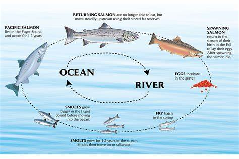

Shelton, WA
前面的三文鱼过马路的录象很受欢迎，好多朋友问有没有抓几条，答案是没有。
三文鱼是淡水里的鱼卵孵化而成的，长大后就要游到海里去，进入海水后鱼会发生变化去适应海水里的盐。
三文鱼一般会在深海里呆1-5年，它们长大了，同时也找到了配偶，这时候它们要回到它们出生的地方产卵了。
三文鱼一旦从海里进入淡水河里，它们就不吃东西了，单靠自己身体支撑游到它们的出生地。
找到一个合适的地方，三文鱼妈妈会下卵，三文鱼爸爸再受精。然后二条鱼就在鱼卵的地方守着，直到它们都死去。
我们曾经在小河边看到这种景象。非常感动的！
春天是小三文鱼入海的时候，秋天则是三文鱼回游下卵的时候。一旦进入淡水，三文鱼就不吃东西了，所以这个时候的三文鱼是味道不好，也没有营养。不要抓了。

×